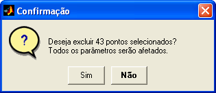
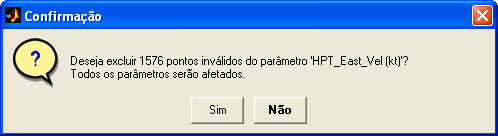
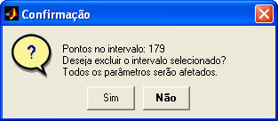
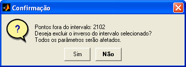
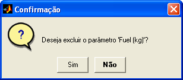
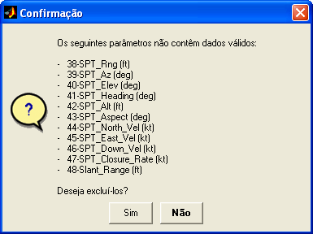
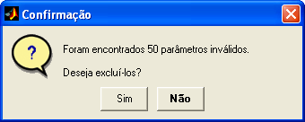

| Menu Dados |
|
Excluir
Esse grupo de
operações permite excluir parâmetros, pontos
ou trechos das matrizes de trabalho.
As operações
disponíveis são:
- Excluir pontos selecionados
- Excluir pontos inválidos
- Excluir
intervalo selecionado
- Excluir
inverso do intervalo selecionado
- Excluir
parâmetro y
- Excluir
parâmetros inválidos
Clique no menu “Dados ►
Excluir ... ► [opção desejada]”.
Excluir
Pontos Selecionados
Essa operação
exclui da matriz de dados todas as observações
correspondentes aos pontos selecionados.
- Use qualquer
operação de seleção de pontos para selecionar os pontos que deseja
excluir.
- Clique no menu “Dados ► Excluir ... ►
Pontos selecionados”
ou clique no botão  na
Barra de Ferramentas.
na
Barra de Ferramentas.

Ao confirmar a
exclusão, os pontos selecionados serão
removidos da matriz de dados e o parâmetro “No. OBS.” será recalculado.
| Nota: Todos os
parâmetros serão afetados pela remoção dos pontos e não apenas o que
estiver sendo exibido. |
Excluir
Pontos Inválidos
Essa operação
exclui da matriz de dados todas as observações
correspondentes aos pontos inválidos ("NaN") do parâmetro selecionado
em y.
- Selecione em "y" o
parâmetro desejado.
- Clique no menu “Dados ► Excluir ... ►
Pontos inválidos.

Ao confirmar a
exclusão, as observações correspondentes aos pontos inválidos
do parâmetro selecionado serão
removidas da matriz de dados e o parâmetro “No. OBS.” será recalculado.
| Nota: Todos os
parâmetros serão afetados pela remoção dos pontos e não apenas o que
estiver sendo exibido. |
Excluir
Intervalo Selecionado
Essa operação
permite excluir o intervalo selecionado (parte
visível no gráfico).
- Selecione em “x”
um parâmetro crescente (“No. OBS.” ou tempo).
- Selecione o
intervalo que deseja excluir, ajustando-o à parte visível do gráfico.
- Clique no menu “Dados ► Excluir ... ►
Intervalo
selecionado”.

Ao confirmar a
exclusão, o intervalo selecionado será excluído
da matriz de dados e o parâmetro “No. OBS.” será recalculado.
| Nota: Todos os
parâmetros serão afetados pela remoção do intervalo e não apenas o que
estiver sendo exibido. |
Excluir
Inverso do Intervalo Selecionado
Essa operação
permite excluir toda a parte não visível do
gráfico, mantendo apenas o intervalo selecionado.
- Selecione em “x”
um parâmetro crescente (“No. OBS.” ou tempo).
- Selecione o
intervalo que deseja manter, ajustando-o à parte visível do gráfico.
- Clique no menu “Dados ► Excluir ... ►
Inverso do
intervalo”.

Ao confirmar a
exclusão, o inverso do intervalo selecionado
será excluído da matriz de dados e o parâmetro “No. OBS.” será
recalculado.
| Nota: Todos os
parâmetros serão afetados pela remoção e não apenas o que estiver sendo
exibido. |
Excluir
Parâmetro Y
Essa operação
exclui o parâmetro selecionado como ordenada.
- Selecione em “y” o
parâmetro que deseja excluir.
- Clique no menu
“Dados ► Excluir ... ► Parâmetro y”.

Ao confirmar a
exclusão, o parâmetro será removido das
matrizes de trabalho.
| Nota: O parâmetro
“No. OBS.” e o parâmetro definido como tempo de referência não podem
ser excluídos. |
Excluir
Parâmetros Inválidos
Essa operação
localiza e exclui os parâmetros que contém
apenas pontos inválidos (NaN).
Clique no menu “Dados ►
Excluir ... ► Parâmetros inválidos”.
O R_DAT
analisará os dados e informará ao usuário a lista de
parâmetros inválidos:

Caso sejam
encontrados mais de 32 parâmetros inválidos, não
será apresentada uma lista, mas apenas o número de parâmetros:

Ao confirmar a
exclusão, os parâmetros serão removidos das
matrizes de trabalho.
| |
Renomear parâmetro y |
Invalidar |
|